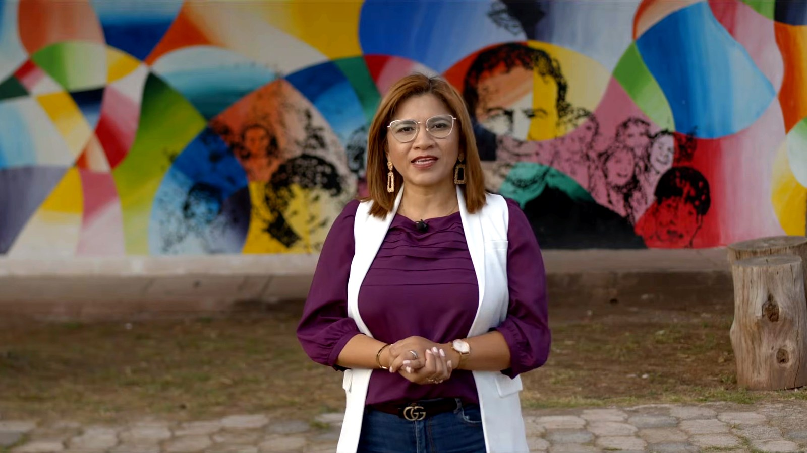

Work Commissioned work for NGOs, international cooperation and brands
Still
1_
Asociación Nueva Vida
Long-term collaboration · 2023–
Brief Documenting the daily work of an organisation with people on the margins, and turning it into campaigns people stop to watch.
My role Documentary filmmaker: recording the stories of service users and programmes. Also campaigns, from script to edit.
Result More than three years of campaigns and over 6 million views.
Read the case →
Still
2_
Bienvenido al futuro
Calidad Rural · 2026
Brief A campaign to give visibility to rural life and encourage people to choose rural products and services. Calidad Rural is the European territorial quality mark for goods made in the countryside with respect for the environment.
My role Filming and edit.
Result More than 300,000 organic views.
Read the case →
Still
3_
El Free Tour de la Trata
NO.MAS.TRATA · 2025
Brief An awareness campaign on human trafficking, framed as a city walking tour.
My role Concept, direction, production and edit, from start to finish.
Result More than 4 million views and wide media coverage.
Read the case →
Still
4_
EUROsociAL+ · EU–Central America
EUROsociAL+ · 2022
Brief Two video campaigns on the milestones of the EU's cooperation framework with Central America.
My role Direction.
Result Two campaigns delivered, built around a conversation between two of the programme's consultants.
Read the case →

Play
5_
Technical training series, Honduras
GIZ / INBAS · 2020–21
Brief Training films on processing fruit and vegetable products for non-formal vocational training.
My role Audiovisual coordination between technical experts and a team of local filmmakers.
Result 15 training films added to the national CADERH learning platform.
Play the video
Some commissions with a more personal approach are shown in Films: LeFeu, 2021 →
Want to work together?
Tell me about your project: a campaign, a documentary, a portrait series.
Write to me
 Still
Still